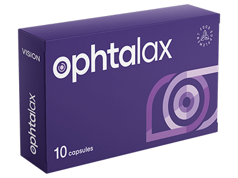

- Kaasaegses maailmas kogevad paljud inimesed nägemisprobleeme erinevate tegurite tõttu, nagu vanus, pikaajaline arvuti ja nutiseadmete kasutamine ning kahjulike keskkonnategurite mõju. Seetõttu kasvab nõudlus toodete järele, mis aitavad säilitada silmade tervist.
- Nägemisprobleemid võivad mõjutada elukvaliteeti ja heaolu. Maailma Terviseorganisatsiooni (WHO) andmetel on nägemisprobleemid üks peamisi tegureid, mis mõjutavad inimeste elukvaliteeti ja iseseisvust.Enne toidulisandite kasutamist konsulteerige oma arstiga.
Ophtalax on looduslike ekstraktide kompleks, mis oma toimega aitab ennetada nägemise halvenemist.
Soovitatav on võtta üks kapsel päevas, kõige parem söögikorra ajal, koos veega. Parimate tulemuste saavutamiseks ja silmade tervise eest hoolitsemiseks on oluline toidulisandit regulaarselt kasutada.
Hoida jahedas ja kuivas kohas.

Ophtalax sisaldab aktiivseid koostisosi, nagu luteiin, zeaksantiin ja C-vitamiin, mis on tuntud oma kaitsvate omaduste poolest silma võrkkestale. Need koostisosad võivad aidata filtreerida kahjulikku valguskiirgust, näiteks sinist valgust, mis võib põhjustada võrkkesta kahjustusi.
Ophtalax kapslid võivad soodustada nägemisteravust tänu koostisosadele nagu A-vitamiin ja E-vitamiin, mis on vajalikud silmade tervislikuks toimimiseks. Need ained aitavad säilitada võrkkesta normaalset tööd ja parandada keskendumisvõimet detailidele.